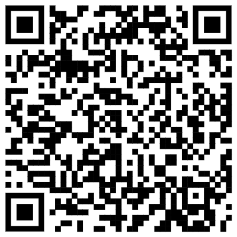

01
Quick capture
Open the app, write the thought, and leave. Spark Note keeps the capture path short.
打開 app，寫下想法，然後離開。Spark Note 讓記錄的路徑保持很短。

Local-first note space
快速記下靈感、收下日常片段，並在需要時安靜回看自己的想法。

For
Ideas, short notes, daily fragments, and thoughts you want to keep close so they can grow naturally over time.
適合靈感、短筆記、日常片段，以及那些想先收好、日後自然生長的想法。
Principle
Local-first, low-noise, no account required. Your notes stay on your device, with manual backup when you need it.
以本機優先、低干擾、不需要帳號為核心。你的筆記留在裝置中，需要時再手動備份。
Open the app, write the thought, and leave. Spark Note keeps the capture path short.
打開 app，寫下想法，然後離開。Spark Note 讓記錄的路徑保持很短。
Group notes into simple boxes without turning organization into the main task.
用簡單的盒子整理筆記，不讓整理本身變成主要工作。
Review notes by time when you want to see what your days have been collecting.
當你想回看日子裡累積了什麼，可以依照時間重新瀏覽筆記。
Export and import JSON backups manually so your local notes remain portable.
手動匯出與匯入 JSON 備份，讓你的本機筆記仍然可以被帶走。
Privacy
Spark Note currently does not require an account, tracking, advertising, analytics SDKs, or cloud sync.
Spark Note 目前不需要帳號，也不使用追蹤、廣告、分析 SDK 或雲端同步。
Read privacy policySupport
Find support details, reporting guidance, and public app information for store review and users.
查看支援資訊、問題回報建議，以及供使用者與商店審核參考的公開 app 資訊。
Open support page